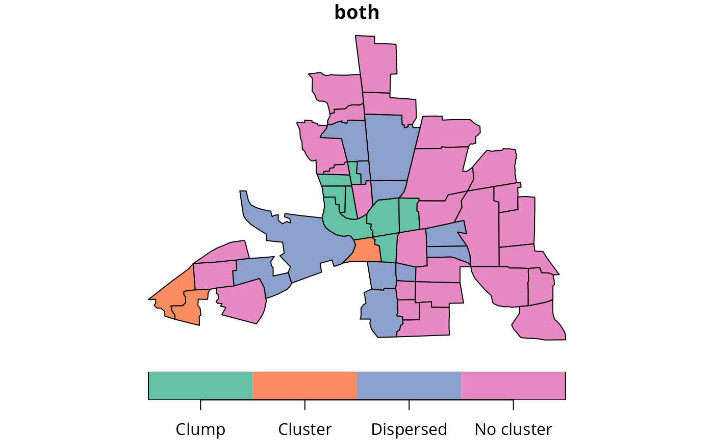
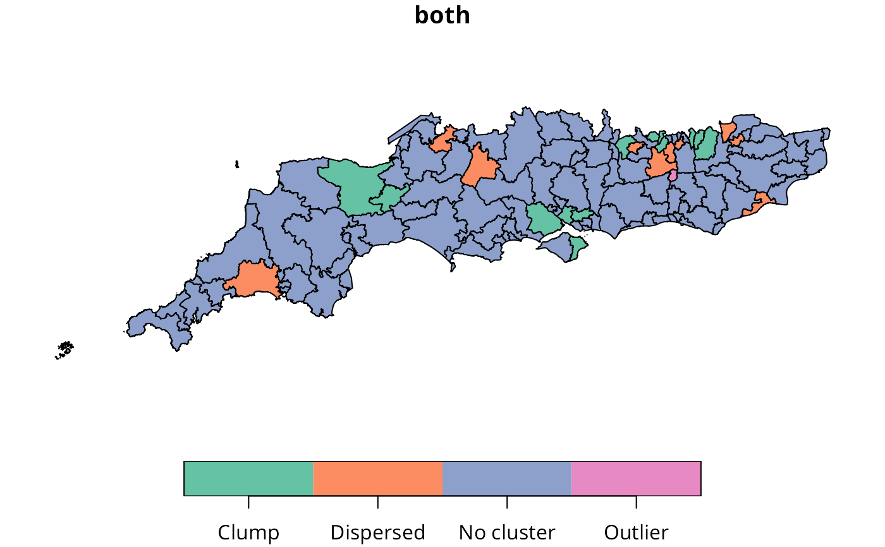
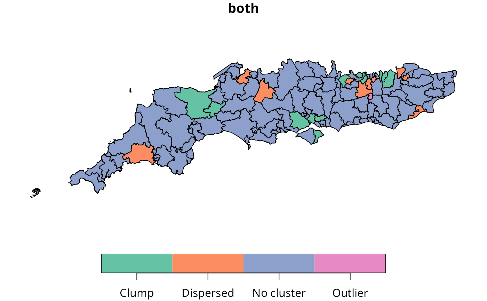

Local Indicators for Categorical Data
licd_multi.RdLocal indicators for categorical data combine a measure of local composition in a window given by the per-observation set of neighbouring observations, with a local multi-category joincount test simplified to neighbours with the same or different categories compared to the focal observation
Arguments
- fx
a factor with two or more categories, of the same length as the neighbours and weights objects in listw
- listw
a
listwobject created for example bynb2listw- zero.policy
default
attr(listw, "zero.policy")as set whenlistwwas created, if attribute not set, use global option value; if TRUE assign zero to the lagged value of zones without neighbours, if FALSE assign NA- adjust.n
default TRUE, if FALSE the number of observations is not adjusted for no-neighbour observations, if TRUE, the number of observations is adjusted
- nsim
default 0, number of conditonal permutation simulations
- iseed
default NULL, used to set the seed; the output will only be reproducible if the count of CPU cores across which computation is distributed is the same
- no_repeat_in_row
default
FALSE, ifTRUE, sample conditionally in each row without replacements to avoid duplicate values, https://github.com/r-spatial/spdep/issues/124- control
comp_binary=TRUE, binomial_punif_alternative="greater", jcm_same_punif_alternative="less", jcm_diff_punif_alternative="greater"
Details
The original code may be found at doi:10.5281/zenodo.4283766
Value
- local_comp
data.frame object with LICD local composition columns: ID, category_i, count_like_i, prop_i, count_nbs_i, pbinom_like_BW, pbinom_unlike_BW, pbinom_unlike_BW_alt, chi_BW_i, chi_K_i, anscombe_BW
- local_config
data.frame object with LICD local configuration columns: ID, jcm_chi_obs, jcm_count_BB_obs, jcm_count_BW_obs, jcm_count_WW_obs, pval_jcm_obs_BB, pval_jcm_obs_WW, pval_jcm_obs_BW
- local_comp_sim
data.frame object with permutation-based LICD local composition columns: ID, pbinom_like_BW, pbinom_unlike_BW, pbinom_unlike_BW_alt, rank_sim_chi_BW, rank_sim_chi_K, rank_sim_anscombe
- local_config_sim
data.frame object with permutation-based LICD local configuration columns: ID, jcm_chi_sim_rank, pval_jcm_obs_BB_sim, pval_jcm_obs_BW_sim, pval_jcm_obs_WW_sim
References
Cliff, A. D., Ord, J. K. 1981 Spatial processes, Pion, p. 20;
Upton, G., Fingleton, B. 1985 Spatial data analysis by example: point pattern and qualitative data, Wiley, pp. 158–170;
Boots, B., 2003. Developing local measures of spatial association for categorical data. Journal of Geographical Systems 5, 139–160;
Boots, B., 2006. Local configuration measures for categorical spatial data: binary regular lattices. Journal of Geographical Systems 8 (1), 1–24;
Pietrzak, M.B., Wilk, J., Kossowski, T., Bivand, R.S., 2014. The application of local indicators for categorical data (LICD) in the spatial analysis of economic development. Comparative Economic Research 17 (4), 203–220 doi:10.2478/cer-2014-0041 ;
Bivand, R.S., Wilk, J., Kossowski, T., 2017. Spatial association of population pyramids across Europe: The application of symbolic data, cluster analysis and join-count tests. Spatial Statistics 21 (B), 339–361 doi:10.1016/j.spasta.2017.03.003 ;
Francesco Carrer, Tomasz M. Kossowski, Justyna Wilk, Michał B. Pietrzak, Roger S. Bivand, The application of Local Indicators for Categorical Data (LICD) to explore spatial dependence in archaeological spaces, Journal of Archaeological Science, 126, 2021, doi:10.1016/j.jas.2020.105306
Author
Roger Bivand Roger.Bivand@nhh.no based on earlier code by Tomasz M. Kossowski, Justyna Wilk and Michał B. Pietrzak
Note
In order to increase the numbers of neighbours using nblag and nblag_cumul is advisable; use of binary weights is advised and are in any case used for the composition measure
Examples
columbus <- st_read(system.file("shapes/columbus.gpkg", package="spData")[1], quiet=TRUE)
HICRIME <- cut(columbus$CRIME, breaks=c(0,35,80), labels=c("low","high"))
(nb <- poly2nb(columbus))
#> Neighbour list object:
#> Number of regions: 49
#> Number of nonzero links: 236
#> Percentage nonzero weights: 9.829238
#> Average number of links: 4.816327
lw <- nb2listw(nblag_cumul(nblag(nb, 2)), style="B")
obj <- licd_multi(HICRIME, lw)
str(obj)
#> List of 4
#> $ local_comp :'data.frame': 49 obs. of 11 variables:
#> ..$ ID : int [1:49] 1 2 3 4 5 6 7 8 9 10 ...
#> ..$ category_i : num [1:49] 1 1 1 1 2 1 1 2 1 1 ...
#> ..$ count_like_i : num [1:49] 4 4 6 7 12 7 2 8 10 8 ...
#> ..$ prop_i : num [1:49] 0.51 0.51 0.51 0.51 0.49 ...
#> ..$ count_nbs_i : num [1:49] 5 6 11 14 22 14 11 14 25 17 ...
#> ..$ pbinom_like_BW : num [1:49] 0.965 0.881 0.702 0.575 0.769 ...
#> ..$ pbinom_unlike_BW : num [1:49] 0.0346 0.1192 0.2979 0.4255 0.2313 ...
#> ..$ pbinom_unlike_BW_alt: num [1:49] 0.201 0.363 0.528 0.634 0.379 ...
#> ..$ chi_BW_i : num [1:49] 1.68033 0.58778 0.0547 0.00583 0.27273 ...
#> ..$ chi_K_i : num [1:49] 1.68033 0.58778 0.0547 0.00583 0.27273 ...
#> ..$ anscombe_BW : num [1:49] 1.06 0.936 0.828 0.785 0.829 ...
#> $ local_config :'data.frame': 49 obs. of 8 variables:
#> ..$ ID : int [1:49] 1 2 3 4 5 6 7 8 9 10 ...
#> ..$ jcm_chi_obs : num [1:49] 0 0.0625 0.625 2.7468 14.1889 ...
#> ..$ jcm_count_BB_obs: num [1:49] 6 6 11 12 55 15 1 27 30 25 ...
#> ..$ jcm_count_BW_obs: num [1:49] 4 7 23 31 50 36 15 31 73 53 ...
#> ..$ jcm_count_WW_obs: num [1:49] 0 1 10 20 21 19 32 9 61 24 ...
#> ..$ pval_jcm_obs_BB : num [1:49] 1 0.207108 0.70232 0.820405 0.000214 ...
#> ..$ pval_jcm_obs_WW : num [1:49] 1 0.3946 0.0981 0.0243 0.7839 ...
#> ..$ pval_jcm_obs_BW : num [1:49] 1.00 1.75e-01 2.08e-01 5.10e-02 3.52e-06 ...
#> $ local_comp_sim : NULL
#> $ local_config_sim: NULL
#> - attr(*, "out")= num [1:49, 1:29] 1 1 1 1 2 1 1 2 1 1 ...
#> ..- attr(*, "ncpus")= int 1
#> ..- attr(*, "dimnames")=List of 2
#> .. ..$ : NULL
#> .. ..$ : chr [1:29] "category_i" "count_like_i" "prop_i" "count_nbs_i" ...
#> - attr(*, "ncpus")= int 1
#> - attr(*, "nsim")= int 0
#> - attr(*, "con")=List of 4
#> ..$ comp_binary : logi TRUE
#> ..$ binomial_punif_alternative: chr "greater"
#> ..$ jcm_same_punif_alternative: chr "less"
#> ..$ jcm_diff_punif_alternative: chr "greater"
#> - attr(*, "class")= chr [1:2] "licd" "list"
h_obj <- hotspot(obj)
str(h_obj)
#> List of 9
#> $ ID : int [1:49] 1 2 3 4 5 6 7 8 9 10 ...
#> $ local_comp : Factor w/ 2 levels "Cluster","Dispersed": 2 2 2 2 2 2 2 2 2 2 ...
#> $ local_comp_sim : NULL
#> $ local_config : Factor w/ 3 levels "Cluster","Dispersed",..: 3 3 3 3 2 3 3 2 3 3 ...
#> $ local_config_sim: NULL
#> $ both : Factor w/ 6 levels "Cluster.Cluster",..: 6 6 6 6 4 6 6 4 6 6 ...
#> $ both_sim : NULL
#> $ both_recode : Factor w/ 4 levels "Clump","Cluster",..: 4 4 4 4 3 4 4 3 4 4 ...
#> $ both_recode_sim : NULL
table(h_obj$both_recode)
#>
#> Clump Cluster Dispersed No cluster
#> 8 3 11 27
columbus$both <- h_obj$both_recode
plot(columbus[, "both"])

GDAL37 <- as.numeric_version(unname(sf_extSoftVersion()["GDAL"])) >= "3.7.0"
file <- "etc/shapes/GB_2024_southcoast_50m.gpkg.zip"
zipfile <- system.file(file, package="spdep")
if (GDAL37) {
sc50m <- st_read(zipfile)
} else {
td <- tempdir()
bn <- sub(".zip", "", basename(file), fixed=TRUE)
target <- unzip(zipfile, files=bn, exdir=td)
sc50m <- st_read(target)
}
#> Reading layer `GB_2024_southcoast_50m' from data source
#> `/tmp/RtmpcuVtwS/temp_libpathba7861ea38876/spdep/etc/shapes/GB_2024_southcoast_50m.gpkg.zip'
#> using driver `GPKG'
#> Simple feature collection with 119 features and 19 fields
#> Geometry type: MULTIPOLYGON
#> Dimension: XY
#> Bounding box: xmin: 82643.12 ymin: 5342.9 xmax: 640301.6 ymax: 187226.2
#> Projected CRS: OSGB36 / British National Grid
plot(sc50m[,"Winner"], pal=c("#2297E6", "#61D04F", "#DF536B", "#F5C710"))
 nb_sc_50m <- poly2nb(sc50m, row.names=as.character(sc50m$Constituency))
#> Warning: neighbour object has 2 sub-graphs;
#> if this sub-graph count seems unexpected, try increasing the snap argument.
sub2 <- attr(nb_sc_50m, "region.id")[attr(nb_sc_50m, "ncomp")$comp.id == 2L]
iowe <- match(sub2[1], attr(nb_sc_50m, "region.id"))
diowe <- c(st_distance(sc50m[iowe,], sc50m))
meet_criterion <- sum(diowe <= units::set_units(5000, "m"))
cands <- attr(nb_sc_50m, "region.id")[order(diowe)[1:meet_criterion]]
nb_sc_50m_iowe <- addlinks1(nb_sc_50m, from = cands[1],
to = cands[3:meet_criterion])
ioww <- match(sub2[2], attr(nb_sc_50m, "region.id"))
dioww <- c(st_distance(sc50m[ioww,], sc50m))
meet_criterion <- sum(dioww <= units::set_units(5000, "m"))
cands <- attr(nb_sc_50m, "region.id")[order(dioww)[1:meet_criterion]]
nb_sc_50m_iow <- addlinks1(nb_sc_50m_iowe, from = cands[2], to = cands[3:meet_criterion])
nb_sc_1_2 <- nblag_cumul(nblag(nb_sc_50m_iow, 2))
licd_obj <- licd_multi(factor(sc50m$Winner), nb2listw(nb_sc_1_2, style="B"))
h_obj <- hotspot(licd_obj)
sc50m$both <- h_obj$both_recode
plot(sc50m[, "both"])

nb_sc_50m <- poly2nb(sc50m, row.names=as.character(sc50m$Constituency))
#> Warning: neighbour object has 2 sub-graphs;
#> if this sub-graph count seems unexpected, try increasing the snap argument.
sub2 <- attr(nb_sc_50m, "region.id")[attr(nb_sc_50m, "ncomp")$comp.id == 2L]
iowe <- match(sub2[1], attr(nb_sc_50m, "region.id"))
diowe <- c(st_distance(sc50m[iowe,], sc50m))
meet_criterion <- sum(diowe <= units::set_units(5000, "m"))
cands <- attr(nb_sc_50m, "region.id")[order(diowe)[1:meet_criterion]]
nb_sc_50m_iowe <- addlinks1(nb_sc_50m, from = cands[1],
to = cands[3:meet_criterion])
ioww <- match(sub2[2], attr(nb_sc_50m, "region.id"))
dioww <- c(st_distance(sc50m[ioww,], sc50m))
meet_criterion <- sum(dioww <= units::set_units(5000, "m"))
cands <- attr(nb_sc_50m, "region.id")[order(dioww)[1:meet_criterion]]
nb_sc_50m_iow <- addlinks1(nb_sc_50m_iowe, from = cands[2], to = cands[3:meet_criterion])
nb_sc_1_2 <- nblag_cumul(nblag(nb_sc_50m_iow, 2))
licd_obj <- licd_multi(factor(sc50m$Winner), nb2listw(nb_sc_1_2, style="B"))
h_obj <- hotspot(licd_obj)
sc50m$both <- h_obj$both_recode
plot(sc50m[, "both"])
